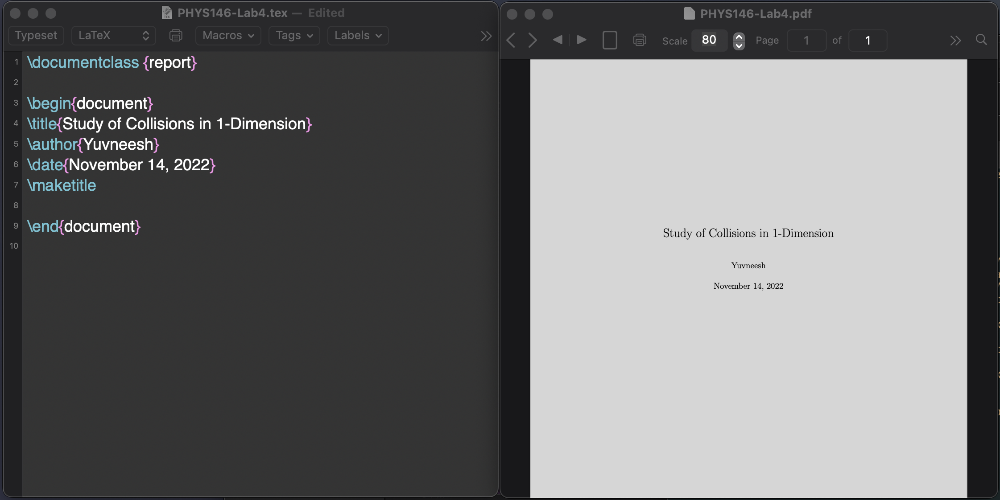

When \(a \ne 0\), there are two solutions to \(ax^2 + bx + c = 0\) and they are \[x = {-b \pm \sqrt{b^2-4ac} \over 2a}\]
For this webpage, MathJX was used to render LaTeX. The above paragraph was written in plain text as:
When \(a \ne 0\), there are two solutions to \(ax^2 + bx + c = 0\) and they are: \[x = {-b \pm \sqrt{b^2-4ac} \over 2a}\]
As it can be seen, any set of words that we intend to render as LaTeX, has to be enclosed between \\( and \\) The common symbols as alphabets, addition (+), subtraction (-), equal sign (=) are typed as is. While for more complex symbols, abbreviations are used to render the symbols. These abbreviations are generally intuitive such as for \( \pm \) the equivalent text is \\( \pm \). More of these symbols will be discussed in detail in following sections.
1. Here is a link to download the setup files for MacTex Follow the installation instructions.
2. After the installation is complete, launch TeXShop.
3. We begin the document with what is referred as the Top Matter. This section is for the information about the document such as the document type, authors, date, etc. We start with the \documentclass command. A documentclass defines the layout of the document. In this case I will be using article as the class. \begin command marks the start of the document. \title \author \date commands are used to build the title of the document and \maketitle is the command to do it.
4. Press Command + T keys to render the first page of the document. A preview window will open.

| Command | Output |
|---|---|
| \pm | \( \pm \) |
| \ne | \( \ne \) |
| \geq | \( \geq \) |
| \leq | \( \leq \) |
| \alpha | \( \alpha \) |
| \e^{\pi} | \( e^{\pi} \) |
| \sqrt{x} \over 2 | \( \sqrt{x} \over 2 \) |